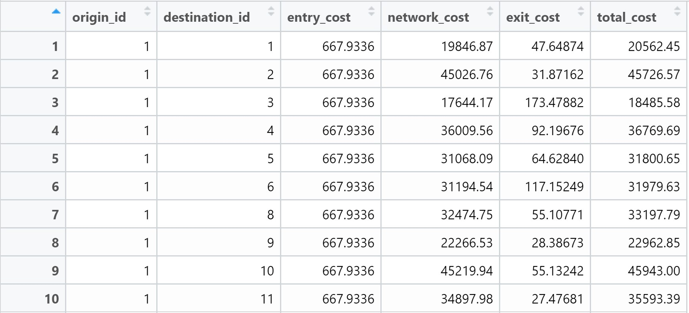
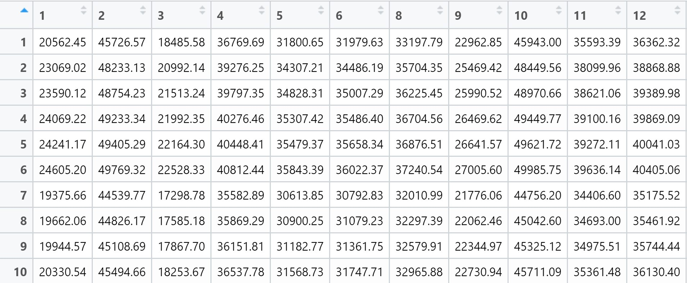
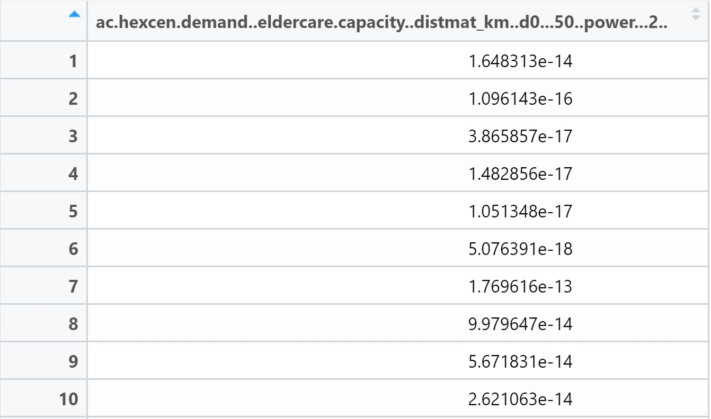
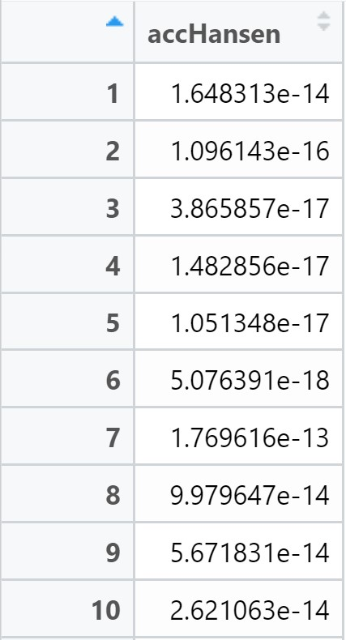
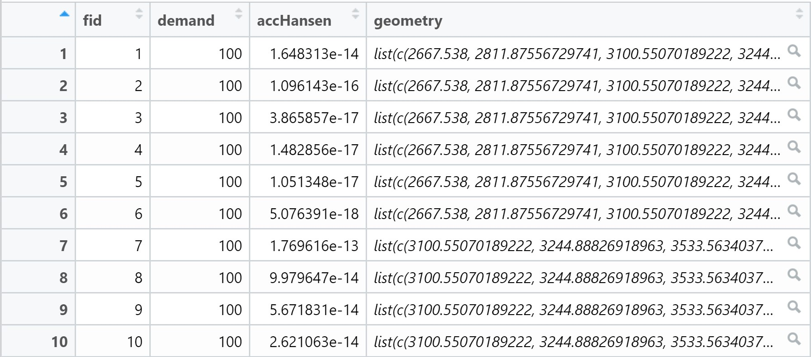

pacman::p_load(tmap, SpatialAcc, sf,
ggstatsplot, reshape2,
tidyverse)
set.seed(123)Hands On Exercise 9- Modelling Geographical Accessibility
9 Introduction
In this hands-on exercise, we will apply various geospatial techniques to model geographical accessibility.
Modeling geographical accessibility using R, especially with techniques like Hansen’s (Gravity Model) and SAM (Spatial Accessibility Models), serves a critical role in spatial analysis and urban planning for various sectors, including healthcare, transportation, and urban services. Here’s why it’s important:
1. Understanding Service Accessibility
- Hansen’s Gravity Model helps measure how accessible services (e.g., hospitals, schools, markets) are to people based on the distance from population centers and the capacity of those services. It assumes accessibility decreases with distance and that larger facilities attract more people.
- SAM (Spatial Accessibility Models) can integrate various factors like population density, facility capacity, and road networks to calculate accessibility indices. This makes it easier to assess disparities in access to essential services.
2. Data-Driven Decision Making
- Accessibility models in R are useful for governments and planners to make data-driven decisions about resource allocation, such as where to build new hospitals, roads, or schools, and how to improve existing infrastructure.
- They help identify underserved areas that need attention by visualizing disparities in accessibility across different regions.
3. Transportation and Mobility Planning
- Transportation networks and travel time are critical elements of accessibility. Modeling in R allows you to consider different transport modes (car, bus, walking) and factors like congestion or road conditions.
- These models help optimize transportation routes and plan public transit systems by analyzing travel times and service efficiency across geographical areas.
4. Equity and Social Justice
- By analyzing accessibility, you can address inequities in access to services based on geographical location, helping improve conditions for marginalized or rural populations.
- It’s valuable in identifying geographical barriers that contribute to social and economic disparities.
5. Predictive and Scenario-Based Analysis
- These models allow for what-if scenarios, where you can test the impact of new infrastructure projects (like roads or metro systems) or changes in population distribution.
- You can forecast how accessibility will change over time, especially with urbanization and migration trends.
6. Integration with GIS and Spatial Data
- R is excellent for handling large spatial datasets and integrating it with GIS data. You can use shapefiles for mapping, analyze raster data (e.g., elevation), and overlay different spatial layers for in-depth analysis.
Basically, modelling geographical accessibility using R enables us to understand spatial dynamics better, helping us improve the distribution of resources and services, optimize transportation networks, and ensure equitable access for all populations.
9.1 Data and Packages
Four data sets will be used in this hands-on exercise, they are:
MP14_SUBZONE_NO_SEA_PL: URA Master Plan 2014 subzone boundary GIS data. This data set is downloaded from data.gov.sg.hexagons: A 250m radius hexagons GIS data. This data set was created by using st_make_grid() of sf package. It is in ESRI shapefile format.ELDERCARE: GIS data showing location of eldercare service. This data is downloaded from data.gov.sg. There are two versions. One in ESRI shapefile format. The other one in Google kml file format. For the purpose of this hands-on exercise, ESRI shapefile format is provided.OD_Matrix: a distance matrix in csv format. There are six fields in the data file. They are:origin_id: the unique id values of the origin (i.e.fidof hexagon data set.),destination_id: the unique id values of the destination (i.e.fidofELDERCAREdata set.),entry_cost: the perpendicular distance between the origins and the nearest road),network_cost: the actual network distance from the origin and destination,exit_cost: the perpendicular distance between the destination and the nearest road), andtotal_cost: the summation ofentry_cost,network_costandexit_cost.
All the values of the cost related fields are in metres.
Do note that aside from ELDERCARE and MP14_SUBZONE_NO_SEA_PL, the datasets have been prepared by Professor Kam Tin Seong from Singapore Management University for the purpose of learning. You are required to solicit explicit approval from Prof. Kam should you want to use these datasets for your own study.
The following R packages are used for our study:
tmap: A powerful R package for creating thematic maps, offering both static and interactive visualizations. It integrates well with spatial data formats like
sfandsp.tidyverse: A collection of R packages (e.g.,
ggplot2,dplyr,tibble) designed for data manipulation, visualization, and analysis, emphasizing a consistent and user-friendly syntax.SpatialAcc: An R package used to compute spatial accessibility measures (e.g., Hansen’s accessibility), providing various methods to quantify how accessible services are across geographical spaces.
sf: The “simple features” package in R, used for handling spatial vector data (points, lines, polygons) with a tidy approach, making it easier to integrate with data manipulation tools.
ggstatsplot: A package that extends
ggplot2by adding statistical tests directly onto plots, allowing for quick and interpretable data visualization with embedded statistical analysis.reshape2: A package used for reshaping data, transforming data frames between wide and long formats (pivoting), which is useful for preparing data for analysis or visualization.
We load them into our environment by using the p_load() function of the pacman package.
9.1.2 Importing the data
9.1.2.1 Geospatial Data Importing and Wrangling
Three geospatial data will be imported from the data/geospatial sub-folder. They are MP14_SUBZONE_NO_SEA_PL, hexagons and ELDERCARE.
The code chunk below is used to import these three data sets shapefile by using st_read() of sf packages.
mpsz <- st_read(dsn = "data/geospatial", layer = "MP14_SUBZONE_NO_SEA_PL")Reading layer `MP14_SUBZONE_NO_SEA_PL' from data source
`C:\arjxn11\ISSS626-GAA\Hands-on_Ex\Hands-on_Ex09\data\geospatial'
using driver `ESRI Shapefile'
Simple feature collection with 323 features and 15 fields
Geometry type: MULTIPOLYGON
Dimension: XY
Bounding box: xmin: 2667.538 ymin: 15748.72 xmax: 56396.44 ymax: 50256.33
Projected CRS: SVY21hexagons <- st_read(dsn = "data/geospatial", layer = "hexagons") Reading layer `hexagons' from data source
`C:\arjxn11\ISSS626-GAA\Hands-on_Ex\Hands-on_Ex09\data\geospatial'
using driver `ESRI Shapefile'
Simple feature collection with 3125 features and 6 fields
Geometry type: POLYGON
Dimension: XY
Bounding box: xmin: 2667.538 ymin: 21506.33 xmax: 50010.26 ymax: 50256.33
Projected CRS: SVY21 / Singapore TMeldercare <- st_read(dsn = "data/geospatial", layer = "ELDERCARE") Reading layer `ELDERCARE' from data source
`C:\arjxn11\ISSS626-GAA\Hands-on_Ex\Hands-on_Ex09\data\geospatial'
using driver `ESRI Shapefile'
Simple feature collection with 120 features and 19 fields
Geometry type: POINT
Dimension: XY
Bounding box: xmin: 14481.92 ymin: 28218.43 xmax: 41665.14 ymax: 46804.9
Projected CRS: SVY21 / Singapore TMFrom the above outputs, we can infer that there is no EPSG information for MPSZ. Though it has the SVY21 label. We must update this.
9.1.2.1.2 Updating CRS Information
We use the st_transform() function of the sf package to update the EPSG code to 3414.
mpsz <- st_transform(mpsz, 3414)
eldercare <- st_transform(eldercare, 3414)
hexagons <- st_transform(hexagons, 3414)We can now use the st_crs() function to verify if the change has been made correctly.
st_crs(mpsz)Coordinate Reference System:
User input: EPSG:3414
wkt:
PROJCRS["SVY21 / Singapore TM",
BASEGEOGCRS["SVY21",
DATUM["SVY21",
ELLIPSOID["WGS 84",6378137,298.257223563,
LENGTHUNIT["metre",1]]],
PRIMEM["Greenwich",0,
ANGLEUNIT["degree",0.0174532925199433]],
ID["EPSG",4757]],
CONVERSION["Singapore Transverse Mercator",
METHOD["Transverse Mercator",
ID["EPSG",9807]],
PARAMETER["Latitude of natural origin",1.36666666666667,
ANGLEUNIT["degree",0.0174532925199433],
ID["EPSG",8801]],
PARAMETER["Longitude of natural origin",103.833333333333,
ANGLEUNIT["degree",0.0174532925199433],
ID["EPSG",8802]],
PARAMETER["Scale factor at natural origin",1,
SCALEUNIT["unity",1],
ID["EPSG",8805]],
PARAMETER["False easting",28001.642,
LENGTHUNIT["metre",1],
ID["EPSG",8806]],
PARAMETER["False northing",38744.572,
LENGTHUNIT["metre",1],
ID["EPSG",8807]]],
CS[Cartesian,2],
AXIS["northing (N)",north,
ORDER[1],
LENGTHUNIT["metre",1]],
AXIS["easting (E)",east,
ORDER[2],
LENGTHUNIT["metre",1]],
USAGE[
SCOPE["Cadastre, engineering survey, topographic mapping."],
AREA["Singapore - onshore and offshore."],
BBOX[1.13,103.59,1.47,104.07]],
ID["EPSG",3414]]9.1.2.1.3 Cleaning and updating attribute fields of the geospatial data
There are many redundant fields in the data tables of both eldercare and hexagons.
The code chunks below will be used to exclude those redundant fields. At the same time, two new fields called demand and capacity will be added into the data table of hexagons and eldercare sf data frame respectively.
Both fields are derived using mutate() of dplyr package.
eldercare <- eldercare %>%
select(OBJECTID, ADDRESSPOS) %>%
mutate(capacity = 100)hexagons <- hexagons %>%
select(fid) %>%
mutate(demand = 100)Do note that for the purpose of this hands-on exercise, a constant value of 100 is used.
In practice, actual demand of the hexagon and capacity of the eldercare centre should be used.
9.1.3.1 Aspatial Data Importing and Wrangling
We use the read_csv() function of the readr package to import the ODMatrix dataset into our R environment.
ODMatrix <- read_csv("data/aspatial/OD_Matrix.csv", skip = 0)9.1.3.2 Tidying the distance matrix
The imported ODMatrix organised the distance matrix columnwise.

On the other hands, most of the modelling packages in R is expecting a matrix look similar to the figure below.

The rows represent origins (i.e. also know as from field) and the columns represent destination (i.e. also known as to field.)
We use the spread() function of the tidyr package to transform the O-D matrix from a thin format into a fat format.
distmat <- ODMatrix %>%
select(origin_id, destination_id, total_cost) %>%
spread(destination_id, total_cost)%>%
select(c(-c('origin_id')))Note: Since tidyr version 1.0, a new function called pivot_wider() has been introduced.
You should use this new function. pivot_wider(), instead of spread().
Currently, the distance is measured in metres because the SVY21 projected coordinate system is used. The code chunk below will be used to convert the unit of measurement from metre to kilometre.
distmat_km <- as.matrix(distmat/1000)9.2 Modelling and Visualizing Accessibility using Hansen Method
9.2.1 Computing Hansen’s accessibility
We can now compute Hansen’s accessibility by using the ac() function of the SpatialAcc package. Do refer to the documentation attached on the link above to gain a better understanding of the SpatialAcc package and its functions.
Hansen’s accessibility model, often called the Gravity Model of Accessibility, is a method used to measure how accessible services or opportunities (e.g., jobs, healthcare, schools) are to a population based on distance or travel time. The model assumes that the ease of accessing a location decreases with distance, and larger or more attractive destinations exert a stronger “pull.”
Formula:
The accessibility AiA_iAi for a given location iii is calculated as:
Ai=∑jWjf(dij)A_i = _j Ai=j∑f(dij)Wj
Where:
AiA_iAi = Accessibility at location iii
WjW_jWj = Weight of the destination jjj (e.g., number of jobs, capacity of hospitals)
f(dij)f(d_{ij})f(dij) = Distance decay function, often inversely proportional to distance or travel time between location iii and destination jjj
dijd_{ij}dij = Distance or travel time between locations iii and jjj
Key Components:
Distance Decay: As the distance between the origin and destination increases, the accessibility decreases. This reflects the friction of distance, where people are less likely to travel far unless the service or opportunity is highly desirable.
Attractiveness of Destination: Larger or more significant destinations (like bigger hospitals or schools) have higher weights, meaning they are more attractive and accessible even at greater distances.
The code chunk below calculates Hansen’s accessibility using ac() of SpatialAcc and data.frame() is used to save the output in a data frame called acc_Handsen.
acc_Hansen <- data.frame(ac(hexagons$demand,
eldercare$capacity,
distmat_km,
#d0 = 50,
power = 2,
family = "Hansen"))
accHansen by using the code chunk below.colnames(acc_Hansen) <- "accHansen"Note that the field looks tidier now.

We now convert the data table into tibble format by using the code chunk below.
acc_Hansen <- tbl_df(acc_Hansen)Lastly, we implement the bind_cols() function of the dplyr package to join the acc_Hansen tibble data frame with the hexagons simple feature data frame. The output is called hexagon_Hansen.
hexagon_Hansen <- bind_cols(hexagons, acc_Hansen)Notice that hexagon_Hansen is a simple feature data frame and not a typical tibble data frame.

9.2.2 Visualizing Hansens Accessibility
9.2.2.1 Extracting map extend
We first extract the extend of the hexagons simple feature data frame by using the st_bbox() function of the sf package.
mapex <- st_bbox(hexagons)The code chunk below uses a collection of mapping functions of the tmap package to create a highly cartographic map depicting accessibility to eldercare centres in Singapore.
tmap_mode("plot")
tm_shape(hexagon_Hansen,
bbox = mapex) +
tm_fill(col = "accHansen",
n = 10,
style = "quantile",
border.col = "black",
border.lwd = 1) +
tm_shape(eldercare) +
tm_symbols(size = 0.1) +
tm_layout(main.title = "Accessibility to eldercare: Hansen method",
main.title.position = "center",
main.title.size = 2,
legend.outside = FALSE,
legend.height = 0.45,
legend.width = 3.0,
legend.format = list(digits = 6),
legend.position = c("right", "top"),
frame = TRUE) +
tm_compass(type="8star", size = 2) +
tm_scale_bar(width = 0.15) +
tm_grid(lwd = 0.1, alpha = 0.5)
9.2.2.3 Statistical Graphic Visualization
We now compare the distribution of Hansen’s accessibility values by URA Planning Region.
We first the planning region field into hexagon_Hansen simple feature data frame by using the code chunk below.
hexagon_Hansen <- st_join(hexagon_Hansen, mpsz,
join = st_intersects)After doing the above, we can use the ggplot() package to plot the distribution by using a boxplot.
ggplot(data=hexagon_Hansen,
aes(y = log(accHansen),
x= REGION_N)) +
geom_boxplot() +
geom_point(stat="summary",
fun.y="mean",
colour ="red",
size=2)
9.3 Modelling and Visualizing Accessibility using KD2SFCA Method
9.3.1 Computing KD2SFCA’s accessibility
In this section, we repeat most of the steps from the previous section to perform the analysis. However, some of the codes will be combined into one code chunk.
The Kernel Density Two-Step Floating Catchment Area (KD2SFCA) method is a spatial accessibility model used to measure the accessibility of services, particularly in health and social services planning. It extends upon the traditional Two-Step Floating Catchment Area (2SFCA) method by incorporating kernel density estimation, which allows for smoother, continuous accessibility values over space, rather than the sharp boundaries seen in traditional 2SFCA models.
Formula:
The basic accessibility score at location iii is given by:
Ai=∑jSjK(dij)A_i = j S_j K(d*{ij})Ai=j∑SjK(dij)
Where:
AiA_iAi = Accessibility at population location iii
SjS_jSj = Supply-to-demand ratio at service location jjj, calculated in Step 1
K(dij)K(d_{ij})K(dij) = Kernel weight based on the distance between iii and jjj, decreasing with distance
KD2SFCA improves upon traditional accessibility models by using kernel density functions to provide more realistic, continuous measures of accessibility based on both supply and demand, accounting for the decreasing influence of distance.
The code chunk below calculates Hansen’s accessibility using ac() of SpatialAcc and data.frame() is used to save the output in a data frame called acc_KD2SFCA. Notice that KD2SFCA is used for the family argument.
acc_KD2SFCA <- data.frame(ac(hexagons$demand,
eldercare$capacity,
distmat_km,
d0 = 50,
power = 2,
family = "KD2SFCA"))
colnames(acc_KD2SFCA) <- "accKD2SFCA"
acc_KD2SFCA <- tbl_df(acc_KD2SFCA)
hexagon_KD2SFCA <- bind_cols(hexagons, acc_KD2SFCA)9.3.2 Visualizing KD2SFCA’s accessibility
The code chunk below uses a collection of mapping functions of the tmap package to create a highly cartographic depiction of accessibility to eldercare centres in Singapore.
Notice that the mapex argument is reused for bbox argument.
tmap_mode("plot")
tm_shape(hexagon_KD2SFCA,
bbox = mapex) +
tm_fill(col = "accKD2SFCA",
n = 10,
style = "quantile",
border.col = "black",
border.lwd = 1) +
tm_shape(eldercare) +
tm_symbols(size = 0.1) +
tm_layout(main.title = "Accessibility to eldercare: KD2SFCA method",
main.title.position = "center",
main.title.size = 2,
legend.outside = FALSE,
legend.height = 0.45,
legend.width = 3.0,
legend.format = list(digits = 6),
legend.position = c("right", "top"),
frame = TRUE) +
tm_compass(type="8star", size = 2) +
tm_scale_bar(width = 0.15) +
tm_grid(lwd = 0.1, alpha = 0.5)
9.3.3 Statistical graphic visualisation
We now compare the distribution of KD2CFA accessibility values by URA Planning Region.
We must first add the planning region field into the hexagon_KD2SFCA simple feature data frame by using the code chunk below.
hexagon_KD2SFCA <- st_join(hexagon_KD2SFCA, mpsz,
join = st_intersects)We now implement the ggplot() package to plot the distribution using a boxplot.
ggplot(data=hexagon_KD2SFCA,
aes(y = accKD2SFCA,
x= REGION_N)) +
geom_boxplot() +
geom_point(stat="summary",
fun.y="mean",
colour ="red",
size=2)
9.4 Modelling and Visualising Accessibility using Spatial Accessibility Measure (SAM) Method
9.4.1 Computing SAM accessibility
In this section, you are going to repeat most of the steps you had learned in previous section to perform the analysis. However, some of the codes will be combined into one code chunk.
Spatial Accessibility Models (SAM) are a set of techniques used to measure how easily people can access services, resources, or opportunities in a geographical area. SAMs are commonly applied in areas such as healthcare, transportation, and urban planning to evaluate the distribution of services relative to the population. By incorporating spatial data, SAMs allow for a more nuanced understanding of the challenges and opportunities people face in accessing services based on their geographic location.
The formula for a basic Spatial Accessibility Model (SAM), often similar to gravity-based models like Hansen’s, can be expressed as:
Ai=∑jSjf(dij)A_i = _j Ai=j∑f(dij)Sj
Where:
AiA_iAi: Accessibility score for location iii (typically a population point).
SjS_jSj: Supply or service capacity at location jjj (e.g., the number of hospital beds, jobs, or services).
dijd_{ij}dij: Distance or travel time between location iii and service point jjj.
f(dij)f(d_{ij})f(dij): Distance decay function, which reduces the impact of service jjj based on the distance dijd_{ij}dij. A common form of the distance decay function is f(dij)=dij−bf(d_{ij}) = d_{ij}^{-b}f(dij)=dij−b, where bbb is a decay parameter that controls how rapidly accessibility decreases with distance.
SAMs offer a comprehensive approach to measuring and understanding the spatial distribution of services in relation to population needs, playing a key role in optimizing service delivery and improving equity in access across different geographic areas.
The code chunk below calculates Hansen’s accessibility using the ac() function of the SpatialAcc package and data.frame() is used to save the output in a data frame called acc_SAM. Notice that SAM is used for family argument.
acc_SAM <- data.frame(ac(hexagons$demand,
eldercare$capacity,
distmat_km,
d0 = 50,
power = 2,
family = "SAM"))
colnames(acc_SAM) <- "accSAM"
acc_SAM <- tbl_df(acc_SAM)
hexagon_SAM <- bind_cols(hexagons, acc_SAM)9.4.2 Visualizing SAM’s accessibility
The code chunk below uses a collection of mapping functions of the tmap package to create a high cartographic depiction of accessibility to eldercare centres in Singapore.
Notice that mapex argument is reused for bbox argument.
tmap_mode("plot")
tm_shape(hexagon_SAM,
bbox = mapex) +
tm_fill(col = "accSAM",
n = 10,
style = "quantile",
border.col = "black",
border.lwd = 1) +
tm_shape(eldercare) +
tm_symbols(size = 0.1) +
tm_layout(main.title = "Accessibility to eldercare: SAM method",
main.title.position = "center",
main.title.size = 2,
legend.outside = FALSE,
legend.height = 0.45,
legend.width = 3.0,
legend.format = list(digits = 3),
legend.position = c("right", "top"),
frame = TRUE) +
tm_compass(type="8star", size = 2) +
tm_scale_bar(width = 0.15) +
tm_grid(lwd = 0.1, alpha = 0.5)
9.4.3 Statistical graphic visualisation
We now compare the distribution of SAM accessibility values by URA Planning Region.
We first add the planning region field into the hexagon_SAM simple feature data frame by using the code chunk below.
hexagon_SAM <- st_join(hexagon_SAM, mpsz,
join = st_intersects)We now use the ggplot() package to plot the distribution by using boxplot graphical method.
ggplot(data=hexagon_SAM,
aes(y = accSAM,
x= REGION_N)) +
geom_boxplot() +
geom_point(stat="summary",
fun.y="mean",
colour ="red",
size=2)